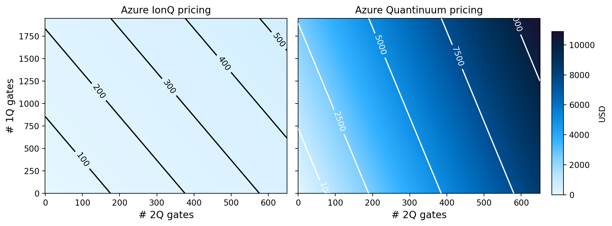

Posts in Hardware
Simple pricing comparison between quantum hardware vendors
- 25 May 2025
Computing the cost of executing circuits between different quantum hardware modalities is quite challenging. Namely, the pricing structures are markedly different, there are lots of special conditions that can apply, and the same hardware can be priced differently depending on the cloud provider one goes through.
Here I do a very simple yet effective price comparison between IBM, IonQ, and Quantinuum over a range of single- and two-qubit gate values. The stark differences in pricing are readily apparent in this example.
Excited State Promotion (ESP) Readout
- 20 December 2021
Excited State Promotion (ESP) readout is method for decreasing measurement errors in quantum computing systems where decay from the excited \(|1\rangle\) state to \(|0\rangle\) is non-negligible over the measurement timescales. Although it was originally an useful technique on the previous generation Falcon R4 systems, today it is only available on a few Falcon R5 systems where the nearly order of magnitude improvement in measurement times leaves little value in using this functionality. In testing, it looks to even be a bit worse performing than the standard readout method. ESP readout is on by default for those systems that support it. To disable it run:
On many quantum computing platforms one of the two computational basis states, the \(|1\rangle\) state by convention, is an excited state of the system with respect to the ground state \(|0\rangle\). The difference in energy between these two states defines the frequency of the qubit through the relation \(E=hf\). Because the \(|1\rangle\) state is an excited state, there is a non-zero probability that the state will decay to \(|0\rangle\) via interaction with the environment. The characteristic timescale for this is the \(T_{1}\) time of the qubit. When performing gate operations, or non-reversible instructions like measurements on qubits, if the time it takes to perform these operations is a non-negligible fraction of \(T_{1}\), then there is a possibility that this decay has occurred.

Comparison of Falcon R5 processors verse R4
- 28 November 2021
Recently IBM Quantum announced the move to revision 5 (R5) of its Falcon processors see this tweet from Jay Gambetta. In particular it was highlighted that there is a 8x reduction in meausrement time on these systems. Lets see if this, or any other enhancements, are visible from the system calibration data.
The highlight of the recently released Falcon R5 “core” systems is their much improved measurement times (7x) and error rates (2x). On these systems a measurement is roughly twice as long as a CNOT gate, compared to 13x on the old R4 systems, and allows for implimenting high-fidelity dynamic circuits with resets, mid-circuit measurements, and eventually classically-conditioned gates. For other tasks, the modest improvements in the CNOT gate errors and \(T_{1}\) times are also welcomed.

Dynamic Bernstein-Vazirani using mid-circuit reset and measurement
- 27 October 2021
The ability to do mid-circuit reset and measurement unlocks a variety of tools for executing quantum circuits. A brief discussion is given in this IBM Research blog post. On particular possibility is the ability to reuse qubits, and in doing so reduce the hardware requirements of some algorithms. The Bernstein-Vazirani (BV) algorithm is one such example. In particular, when using phase-kickback, BV usually requires a high degree of qubit connectivity to impliment. This has been used by trapped-ion hardware vendors to show that their hardware gives better fidelity on these problems, e.g. see (https://arxiv.org/abs/2102.00371 and https://www.nature.com/articles/s41467-019-13534-2). However, with reset and measurement, BV requires only two qubits, making connectivity differences mute. We showed this in a reply Tweet: https://twitter.com/nonhermitian/status/1362348935440986113, but did not explain how we got that figure. So here is how I did it.
Here we select the backend and extract its two-qubit gate coupling map. This is not the same backend used in the original figure as, at the time or writing, that one is offline. It is however the same processor family and revision.